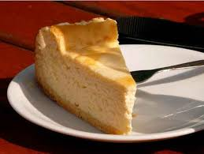

Tarta de queso 🥧

Descripción:
- 6 Comensales
- 45 min
- Dificultad Baja
- Costo Medio
Ingredientes:
Marca tus ingredientes:
Preparación:
- Empieza preparando la base. Tritura las galletas de vainilla, ya sea con un procesador de alimentos o colocándolas dentro de una bolsa con cierre y aplastándolas con un rodillo hasta pulverizarlas.
- Vierte las galletas trituradas en un bol junto con la mantequilla previamente derretida y mezcla bien.
- Acomoda esta preparación en un molde de 18 cm de diámetro, cubierto en la base con papel manteca o film, y si lo prefieres coloca tiras de acetato en las paredes para facilitar el desmolde. Presiona firmemente la mezcla en la base y refrigera.
- Para el relleno de queso crema comienza hidratando la gelatina en agua fría. Basta con verter el agua sobre la gelatina en polvo, remover suavemente para evitar grumos y dejar reposar por lo menos unos 10 minutos para que se hidrate.
- Aparte, coloca en un bol el queso crema a temperatura ambiente junto con el azúcar y mezcla hasta obtener una crema sedosa y untable.
- Añade la crema de leche poco a poco, integrando bien; si lo prefieres puedes utilizar un procesador de alimentos para lograr una textura homogénea.
- Cuando la gelatina esté hidratada, caliéntala unos segundos en el microondas o a baño María hasta que se vuelva líquida, sin dejar que hierva. Retírala y añade un par de cucharadas de la crema de queso crema, mezclando bien para que se integre y evitar que se enfríe demasiado rápido.
- Incorpora esta preparación al resto de la crema y remueve con rapidez hasta que quede uniforme. Vuelca la mezcla en el molde sobre la base de galleta y refrigera al menos cuatro horas, aunque lo ideal es dejarla toda la noche para que tome cuerpo.
- Desmolda con cuidado. Decora con fruta fresca o unas hojas de menta y a disfrutar